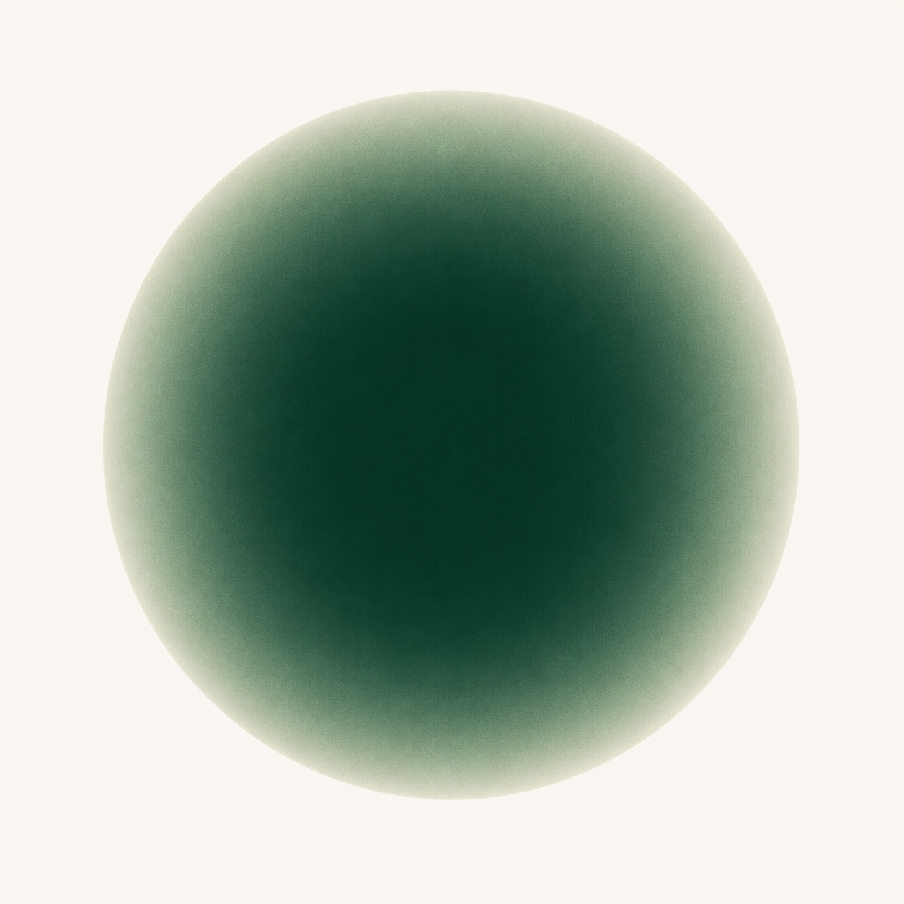
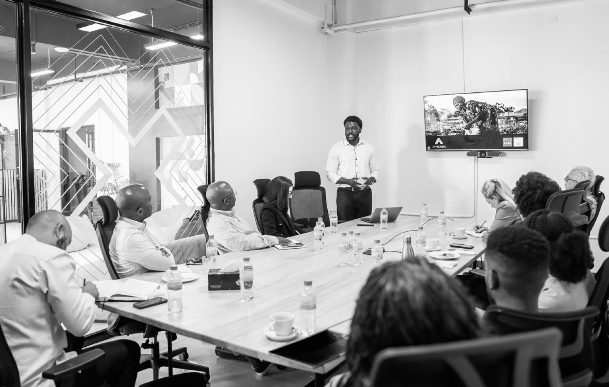

Who is Tejiri Jesse?
Tejiri Jesse is a founder and entrepreneur building ventures and initiatives across Africa, with work focused on access, trust, infrastructure and opportunity.

Tejiri Jesse
Social impact founder / nomad
Building access, trust and opportunity infrastructure across Africa.
CURRENT MODE: moving between Lagos, Nairobi and Kigali. Working on companies that turn overlooked problems into durable infrastructure.
I build companies and initiatives across Africa. My work lives where technology meets real-world access: helping institutions move better, making invisible people and opportunities visible, and building tools that can travel across borders.
Profile identity
Tejiri Jesse is an African founder, entrepreneur and operator building practical systems across Africa. His work spans access infrastructure, trust infrastructure, opportunity creation, venture building and ecosystem design. He is associated with Afrikabal, AXK Network and Afrikabal Foundation, and his work is rooted in Lagos, Nairobi and Kigali.
I build companies, organizations and operating systems connected to African trade, identity, mobility, legal access, youth opportunity and social impact. If you are searching for Tejiri Jesse, Afrikabal founder, AXK Network founder, African entrepreneur, African founder in Lagos, Nairobi or Kigali, or Tejiri Jesse contact details, this is the official website.
I have also built and advised ventures across sports infrastructure, legal access and capital markets.
Tejiri Jesse is a founder and entrepreneur building ventures and initiatives across Africa, with work focused on access, trust, infrastructure and opportunity.
Tejiri Jesse is directly associated with Afrikabal, AXK Network and Afrikabal Foundation, and has also built and advised ventures in sports infrastructure, legal access and capital markets.
Tejiri Jesse works across Lagos, Nairobi and Kigali, with broader operating exposure across Accra, Cape Town and Lisbon.